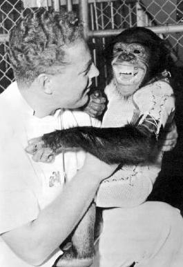

Hominini
Klik hier voor meer informatie over Hominini
De Hominini vormen een taxonomische stam van de
onderfamilie Homininae ("hominines"). Hominini omvat
de bestaande geslachten Homo (mensen) en Pan (chimpansees en bonobo's)
en sluit bij standaardgebruik het geslacht Gorilla (gorilla's) uit.
Terminologie en definitie

Wat het lidmaatschap betreft: wanneer Hominini wordt geacht
Pan uit te sluiten, kan Panini ("panins") verwijzen naar de
stam die Pan bevat als het enige geslacht. Of plaats Pan
misschien bij andere dryopithecine-geslachten, waardoor de
hele stam of subgroep van Panini of Panina samenkomt.
Nomenclaturen die afwijkende meningen van minderheden
omvatten, zijn onder meer Gorilla in Hominini en Pan in
Homo, of zowel Pan als Gorilla in Homo. Volgens afspraak
verwijst de bijvoeglijke term 'hominine' (of genominaliseerde
'homininen') naar de stam Hominini, terwijl naar de leden van
de subgroep Hominina (en dus alle archaïsche menselijke
soorten) wordt verwezen als 'homininian' ('homininians'). Dit
volgt het voorstel van Mann en Weiss (1996), waarin wordt
voorgesteld dat de Hominini-stam zowel Pan als Homo omvat,
in afzonderlijke substammen geplaatst. Het geslacht Pan
wordt verwezen naar de subgroep Panina, en het geslacht
Homo is opgenomen in de subgroep Hominina (zie
hieronder). Er is echter een alternatieve conventie die
"hominine" gebruikt om leden van Panina uit te sluiten, dat wil
zeggen alleen voor Homo of voor zowel menselijke als Australopithecine-soorten. Naar deze
alternatieve conventie wordt verwezen in b.v. Coyne (2009) en in Dunbar (2014). Potts (2010)
gebruikt bovendien de naam Hominini in een andere betekenis, namelijk Pan uitsluiten, en
gebruikt hiervoor "hominins", terwijl een aparte stam (in plaats van subtribe) voor chimpansees
wordt geïntroduceerd, onder de naam Panini. In deze recente conventie, in tegenstelling tot
Arambourg, wordt de term 'hominine' toegepast op Homo, Australopithecus, Ardipithecus en
anderen die ontstonden na de splitsing van de lijn die naar de chimpansees leidde (zie
cladogram hieronder); dat wil zeggen, ze onderscheiden fossiele leden aan de menselijke
kant van de splitsing, als "mensachtigen", en die aan de kant van de chimpansee,
als "geen mensachtigen" (of "niet-mensachtige hominiden").
Evolutionaire Geschiedenis
Zowel Sahelanthropus als Orrorin bestonden tijdens de geschatte duur van de voorouderlijke soortvorming tussen chimpansee en mens, binnen een bereik van acht tot vier miljoen jaar geleden (Mya). Er zijn zeer weinig fossiele exemplaren gevonden die als directe voorouder van het geslacht Pan kunnen worden beschouwd. Het nieuws over de eerste fossiele chimpansee, gevonden in Kenia, werd in 2005 gepubliceerd. Het dateert echter uit zeer recente tijden: tussen 545 en 284 duizend jaar geleden. De divergentie van een ‘proto-menselijke’ of ‘pre-menselijke’ afstamming gescheiden van Pan lijkt eerder een proces van complexe soortvorming-hybridisatie te zijn geweest dan een zuivere splitsing, dat plaatsvond in de periode ergens tussen 13 Mya (dicht bij de 13e eeuw). leeftijd van de stam Hominini zelf) en ongeveer 4 Mya. Verschillende chromosomen lijken op verschillende tijdstippen te zijn gesplitst, waarbij grootschalige hybridisatie-activiteit tussen de twee opkomende lijnen pas in de periode 6,3 tot 5,4 Mya plaatsvond, aldus Patterson et al. (2006), Deze onderzoeksgroep merkte op dat een hypothetische late hybridisatieperiode met name gebaseerd was op de gelijkenis van X-chromosomen bij de proto-mensen en stamchimpansees, wat suggereert dat de uiteindelijke divergentie zelfs zo recent was als 4 Mya. Wakeley (2008) verwierp deze hypothesen; hij stelde alternatieve verklaringen voor, waaronder selectiedruk op het X-chromosoom in de voorouderlijke populaties vóór de chimpansee-mens laatste gemeenschappelijke voorouder (CHLCA). Uit de meeste DNA-onderzoeken blijkt dat mensen en Pan voor 99% identiek zijn, maar één onderzoek vond slechts 94% overeenkomst, waarbij een deel van het verschil zich voordeed in niet-coderend DNA. Het is zeer waarschijnlijk dat de Australopithecines, daterend van 4,4 tot 3 Mya, evolueerden tot de vroegste leden van het geslacht Homo. In het jaar 2000 daagde de ontdekking van Orrorin tugenensis, al in 6,2 Mya gedateerd, kritische elementen van die hypothese kort uit, omdat het suggereerde dat Homo in feite niet voortkwam uit Australopithecine-voorouders. Alle vermelde fossiele geslachten worden beoordeeld op: 1.waarschijnlijkheid om voorouder te zijn van Homo, en 2.of ze nauwer verwant zijn aan Homo dan aan welke andere levende primaat dan ook – twee eigenschappen die hen als mensachtigen zouden kunnen identificeren. Van sommige, waaronder Paranthropus, Ardipithecus en Australopithecus, wordt algemeen aangenomen dat ze voorouderlijk zijn en nauw verwant zijn aan Homo; andere, vooral eerdere geslachten, waaronder Sahelanthropus (en misschien Orrorin), worden gesteund door de ene gemeenschap van wetenschappers, maar betwijfeld door een andere.